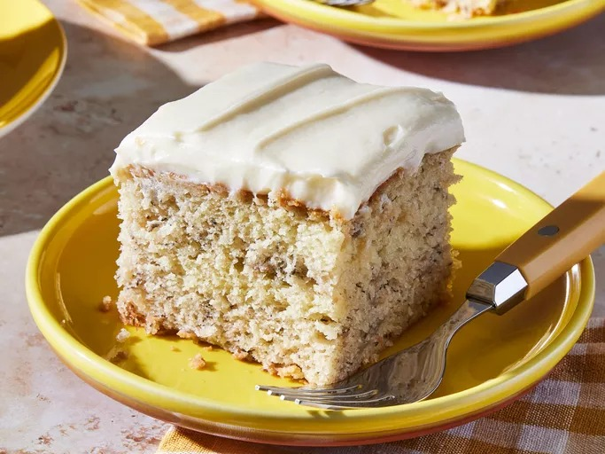

Banana Cake

Description
This banana cake recipe uses fresh mashed bananas and buttermilk for super moist results.
Ingredients
Cake:
- 1 ½ cups mashed bananas
- 2 teaspoons lemon juice
- 3 cups all-purpose flour
- 1 ½ teaspoons baking soda
- ¼ teaspoon salt
- 2 ⅛ cups white sugar
- ¾ cup butter
- 3 eggs
- 2 teaspoons vanilla extract
- 1 ½ cups buttermilk
Frosting:
½ cup butter, softened
- 1 (8 ounce) package cream cheese, softened
- 1 teaspoon vanilla extract
- 3 ½ cups confectioners' sugar
Steps
- Gather all ingredients. Preheat the oven to 275 degrees F (135 degrees C). Grease and flour a 9x13-inch pan.
- Make cake: Mix mashed bananas with lemon juice in a small bowl.
- Mix flour, baking soda, and salt in a medium bowl.
- Cream sugar and butter in a large bowl until light and fluffy, 3 to 4 minutes.
- Beat in eggs one at a time, then stir in vanilla.
- Beat in flour mixture alternately with buttermilk. Stir in banana mixture.
- Pour batter into the prepared pan.
- Bake in the preheated oven until a toothpick inserted into the center of the cake comes out clean, about 1 hour.
- Remove cake from the oven and place it directly into the freezer for 45 minutes. This will make the cake very moist.
- Meanwhile, make frosting: Cream butter and cream cheese until smooth. Beat in vanilla. Add confectioners sugar and beat on low speed until combined, then on high until frosting is smooth.
- Spread frosting on cooled cake.
- Serve and enjoy!